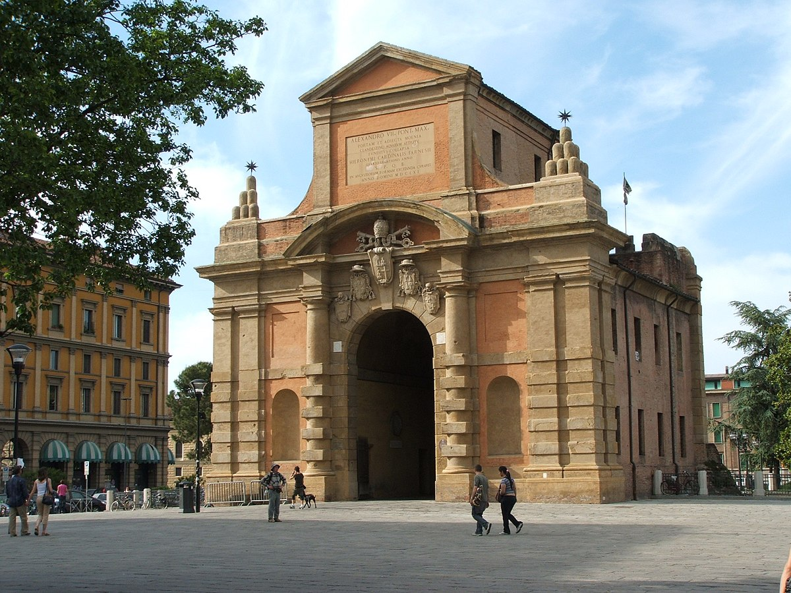

Esta es mi página web donde hablare sobre mi viaje a Bolonia
Dia 1 Tomo el vuelo a las 6:30 am desde Barcelona y llegamos a las 8:10 am a Bolonia. Salgo del aeropuerto a las 9:00 am y cogería un bus para ir en dirección hacia el hotel que me hospedo que es: “CDH My One Hotel Bologna” donde guardaba todos mis objetos e iría rápidamente al turno de desayuno para descansar. Después acabaría de acomodar todas mis cosas y haría una siesta hasta la hora de comer. Donde comería en el mismo hotel por 15 Euros. Cuando acabe de comer voy a darme un paseo alrededor del hotel. Donde pasó por un Mcdonalds cerca del hotel. Un río cerca del hotel llamado Reno por el que paseo y por último doy un paseo en un pequeño parque cerca del rio llamado: “Giardino Otello Colli”. Decido volver al hotel a las 7:00 pm para cenar por 20 euros y preparar todo para el día de mañana.
Dia 2 En el día 2 tenía un objetivo claro y es ir a la torre de pisa. Así que me despierto a las 8:30 Am para desayunar en el hotel y salir a las 9:15 am del hotel hasta mi parada de bus y a las 9:30 am llega mi bus y son 3 completas horas hasta llegar a la torre de pisa que me costaron 20 euros entre bus y metro. Antes de entrar a la zona de las estructuras decido comer en el McDonalds de la entrada por 15 euros. Una vez ya he comido paseo por la zona turística alrededor de las 1:30 pm y me tomo fotos con la torre de pisa y demás. También decido pagar 8 euros para poder entrar a Battistero di San Giovanni en la cual hago cola y también hago cola para entrar al Piazza del Duomo. Después de visitar todo vuelvo a la estación sobre las 4:00 pm y pago otros 20 euros por 3 horas de viaje de vuelta. Llego al hotel sobre las 7:00 pm para descansar y cenar en el hotel por 20 euros y preparar el día de mañana.

Dia 3 En el día 3 me desperté a las 10 am para desayunar y esperar hasta la 1:00 pm para coger un bus e ir al centro de Bolonia. Cogeremos un bus cerca del hotel hasta las Torres de Bolonia por 5 euros y llegaremos allí a las 1:30 pm después a la Piazza Maggioer, Torresotto di Porta Govese. Hago un parón para comer en Osteria Bartolini por 40 euros. Después de comer a las 4 voy a Palazzo Belloni por 15 euros la entrada y salgo a las 6:00 pm y vuelvo al hotel en bus sobre las 6:45 pm por 5 euros donde acabo de cenar por 20 euros y me voy a dormir para el dia siguiente.
Dia 4 Me despierto a las 10:00 am para desayunar y me quedo en el hotel hasta la 1:00 pm para poder ir a casa de un viejo amigo que conocí en España y que me invitaba a pasar un dia con el asi que le espero fuera de mi hotel y en coche vamos hasta “Pistoya”. Llegamos a su casa sobre las 2:00 pm, comemos y hablamos de cómo nos ha ido. Donde también conozco a su familia y ceno. A las 10:00 pm vuelvo al hotel y preparó todo para mañana.
Dia 5 Este dia me despierto a las 10:00 para desayunar y sobre las 12:00 am tomo un bus hasta Bolonia para hacer una actividad diferente a la que hice el día 3. Este día hare un paseo pasando por todas las torres que rodeaban el centro de la ciudad hace años. Una vez ya en Bolonia comenzamos por Porta Saragozza pasamos por Porta Castiglione, Porta Santo Stefano, Porta Maggiore, Porta San Vitale, Porta San Donato, Porta Mascarella, Porta Galliera, Porta Lame y Porta San Felice. A las 3:00pm a cabo el recorrido y voy a un restaurante a comer por 40 euros. vuelvo al hotel a las 5:00pm donde descanso y estoy en la piscina hasta la hora de cenar. Ceno por 20 euros y preparó todo para el día siguiente.
Dia 6 Hoy madrugo a las 9:00 am y voy a comer el desayuno a las 10:00 am me espera mi amigo en su coche para ir a San Marino a pasar el dia llegamos allí sobre la 1:00 pm donde comimos de unos tuppers que había preparado mi amigo y subimos a la cima de la torre de “De La Fratta” bajamos la montaña y paseamos un poco por la ciudad hasta las 6:00 pm y volvemos al hotel donde llegó a las 8:00 pm me despido de mi amigo, ceno y preparó todo para ir al aeropuerto por la mañana
Dia 7 Este dia me desperté a las 7:00 y llegué al aeropuerto a las 7:30 tomo el avion a las 9:00 am y llegó a españa a las 11 am.